Redes y análisis topológico de comunidades microbianas de la rizosfera del tomate
Pregunta I: ¿Las muestras de rizosfera de tomate se organizan según su composición microbiana y su país de procedencia? Construiremos una red de muestras mediante disimilitud de Bray–Curtis y estudiaremos su filtración de Vietoris–Rips.
Pregunta II: ¿Cómo varían las asociaciones estadísticas entre géneros microbianos de la rizosfera de tomate entre países? Construiremos redes exploratorias basadas en Spearman y compararemos su topología.
0. Instaslar y preparar datos
Descomenta estas líneas y ejecuta para instalar los paquetes en caso de que no los tengas instalados.
Defaulting to user installation because normal site-packages is not writeable
Collecting biom-format
Downloading biom-format-2.1.16.tar.gz (11.7 MB)
━━━━━━━━━━━━━━━━━━━━━━━━━━━━━━━━━━━━━━━━11.7/11.7 MB10.1 MB/s eta 0:00:0000:0100:01
Installing build dependencies ... done
Getting requirements to build wheel ... done
Preparing metadata (pyproject.toml) ... done
Collecting h5py
Downloading h5py-3.8.0-cp37-cp37m-manylinux_2_17_x86_64.manylinux2014_x86_64.whl (4.3 MB)
━━━━━━━━━━━━━━━━━━━━━━━━━━━━━━━━━━━━━━━━4.3/4.3 MB44.7 MB/s eta 0:00:0000:0100:01
Requirement already satisfied: scipy>=1.3.1 in /opt/conda/envs/TDA/lib/python3.7/site-packages (from biom-format) (1.7.3)
Requirement already satisfied: pandas>=0.20.0 in /opt/conda/envs/TDA/lib/python3.7/site-packages (from biom-format) (1.3.5)
Requirement already satisfied: numpy>=1.9.2 in /opt/conda/envs/TDA/lib/python3.7/site-packages (from biom-format) (1.21.6)
Requirement already satisfied: click in /opt/conda/envs/TDA/lib/python3.7/site-packages (from biom-format) (8.1.7)
Requirement already satisfied: python-dateutil>=2.7.3 in /opt/conda/envs/TDA/lib/python3.7/site-packages (from pandas>=0.20.0->biom-format) (2.8.2)
Requirement already satisfied: pytz>=2017.3 in /opt/conda/envs/TDA/lib/python3.7/site-packages (from pandas>=0.20.0->biom-format) (2022.4)
Requirement already satisfied: importlib-metadata in /opt/conda/envs/TDA/lib/python3.7/site-packages (from click->biom-format) (4.11.4)
Requirement already satisfied: six>=1.5 in /opt/conda/envs/TDA/lib/python3.7/site-packages (from python-dateutil>=2.7.3->pandas>=0.20.0->biom-format) (1.16.0)
Requirement already satisfied: typing-extensions>=3.6.4 in /opt/conda/envs/TDA/lib/python3.7/site-packages (from importlib-metadata->click->biom-format) (4.4.0)
Requirement already satisfied: zipp>=0.5 in /opt/conda/envs/TDA/lib/python3.7/site-packages (from importlib-metadata->click->biom-format) (3.8.1)
Building wheels for collected packages: biom-format
Building wheel for biom-format (pyproject.toml) ... done
Created wheel for biom-format: filename=biom_format-2.1.16-cp37-cp37m-linux_x86_64.whl size=12182420 sha256=01183697c6c4293af4cdb53cc762211662e749a6038387300a340fa130839c71
Stored in directory: /home/jupyter-haydee/.cache/pip/wheels/fa/8b/40/28b76f88c46794969a6c2daa53c0374a73cec299a9c649c1fd
Successfully built biom-format
Installing collected packages: h5py, biom-format
WARNING: The script biom is installed in '/home/jupyter-haydee/.local/bin' which is not on PATH.
Consider adding this directory to PATH or, if you prefer to suppress this warning, use --no-warn-script-location.Successfully installed biom-format-2.1.16 h5py-3.8.0
Note: you may need to restart the kernel to use updated packages.
BIOM instalado correctamente
Primero Cargaremos los paquetes necesarios para nuestro proyecto.
In [1]:
import biom #Paquete para trabajar con archivos biomimport pandas as pd #Paquete para trabajar con dataframesimport numpy as np #Paquete para trabajar con arreglos y matricesimport networkx as nx #Paquete para trabajar con grafosimport matplotlib.pyplot as plt #Paquete para graficarimport matplotlib.colors as mcolors #Paquete para trabajar con coloresfrom scipy import stats #Paquete para trabajar con estadísticafrom itertools import combinations #Paquete para trabajar con combinacionesimport gudhi as gd #Paquete para trabajar con topología algebraicaimport os #Paquete para trabajar con el sistema operativoimport seaborn as sns #Paquete para trabajar con visualización de datosfrom sklearn.metrics.pairwise import pairwise_distances #Paquete para calcular distancias entre pares de muestrasimport re #Paquete para trabajar con expresiones regulares
Vamos a cargar los datos sobre presencia de diferentes microorganismos en plantas, que cuentan con información sobre la especie de planta, el tipo de microorganismo y la cantidad presente, etc. Esto nos permitirá analizar la diversidad microbiana en diferentes especies de plantas y cómo varía según el tipo de microorganismo.
In [7]:
# Definir de donde salen los datosworkdir ="subset"# Mostrar los archivos disponiblesprint(os.listdir(workdir))
# Establecer el directorio de trabajo (asegúrate de cambiarlo a tu ruta local)#workdir = "/Users/alejandroucan/Documents/GitHub/BioInfo/subset"#os.chdir(workdir)#print(os.listdir(workdir))
# Establecer la ruta del archivo BIOM (asegúrate de cambiarlo a tu ruta local)BIOM_PATH= archivo = os.path.join(workdir, "taller_genus.biom")# Cargar la tabla BIOMtable = biom.load_table(BIOM_PATH)# función que extrae la información de taxonomía de la tabla BIOM y la convierte en un DataFrame de pandas# Función que extrae y limpia la información taxonómica de una tabla BIOMdef extract_taxonomies(biom_table):""" Extrae la taxonomía de una tabla BIOM y la convierte en un DataFrame de pandas, eliminando los prefijos taxonómicos (k__, p__, c__, o__, f__, g__). """ ranks = ['domain', 'phylum', 'class', 'order', 'family', 'genus'] feature_ids = biom_table.ids(axis='observation') taxonomy_rows = []for feature_id in feature_ids: metadata = biom_table.metadata(feature_id, axis='observation') or {} taxonomy =list(metadata.get('taxonomy') or [])# Eliminar los prefijos taxonómicos taxonomy = [ name.split('__', 1)[1] ifisinstance(name, str) and'__'in nameelse namefor name in taxonomy ]# Completar con None si faltan niveles taxonómicos taxonomy_rows.append( (taxonomy + [None] *len(ranks))[:len(ranks)] )return pd.DataFrame( taxonomy_rows, index=feature_ids, columns=ranks )# Convertir la tabla BIOM a un DataFrame de pandas y extraer la información de taxonomía (con la función definida anteriormente)counts_df = table.to_dataframe(dense=True)taxonomy_df = extract_taxonomies(table)
La tabla de conteo (counts_df) contiene la información de abundancia de cada microorganismo en cada muestra, podemos observar que el índice corresponde al nombre de la muestra del microorganismo y las columnas corresponden a los diferentes muestras tomadas con la abundancia de cada microorganismo en cada muestra.
In [14]:
print(" La forma de la tabla de conteo es:", counts_df.shape)counts_df.head()
La forma de la tabla de conteo es: (3330, 75)
SRR12192850
SRR13062011
SRR11128413
SRR12964294
SRR12192805
SRR14458748
SRR8197395
SRR21737280
SRR11092511
SRR14320329
...
SRR14320321
SRR15947149
SRR17036899
SRR14320326
SRR15947150
SRR17036900
SRR15947147
SRR17036903
SRR15947156
SRR17036897
Lactiplantibacillus
87.0
58.0
63.0
64.0
55.0
390.0
245.0
98.0
106.0
1937.0
...
3061.0
55.0
77.0
2387.0
43.0
200.0
51.0
116.0
46.0
87.0
Lactobacillus
150.0
120.0
317.0
215.0
154.0
474.0
622.0
265.0
89.0
1119.0
...
790.0
158.0
348.0
1591.0
119.0
346.0
101.0
258.0
114.0
236.0
Ligilactobacillus
66.0
45.0
140.0
85.0
57.0
182.0
248.0
141.0
40.0
440.0
...
380.0
90.0
109.0
610.0
78.0
102.0
45.0
110.0
39.0
134.0
Limosilactobacillus
152.0
134.0
108.0
190.0
151.0
228.0
534.0
246.0
74.0
821.0
...
381.0
160.0
229.0
832.0
124.0
288.0
111.0
376.0
115.0
361.0
Companilactobacillus
27.0
27.0
101.0
39.0
26.0
109.0
134.0
52.0
21.0
215.0
...
164.0
33.0
9.0
325.0
22.0
19.0
14.0
29.0
19.0
17.0
5 rows × 75 columns
La tabla de taxonomía (taxonomy_df) contiene información sobre la clasificación taxonómica de cada microorganismo, incluyendo el dominio, filo, clase, orden, familia, género y especie. Esto nos permitirá analizar la diversidad microbiana a diferentes niveles taxonómicos y cómo varía según la especie de planta y el tipo de microorganismo.
In [16]:
print(" La forma de la tabla de taxonomía es:", taxonomy_df.shape)taxonomy_df.head()
La forma de la tabla de taxonomía es: (3330, 6)
domain
phylum
class
order
family
genus
Lactiplantibacillus
Bacteria
Bacillota
Bacilli
Lactobacillales
Lactobacillaceae
Lactiplantibacillus
Lactobacillus
Bacteria
Bacillota
Bacilli
Lactobacillales
Lactobacillaceae
Lactobacillus
Ligilactobacillus
Bacteria
Bacillota
Bacilli
Lactobacillales
Lactobacillaceae
Ligilactobacillus
Limosilactobacillus
Bacteria
Bacillota
Bacilli
Lactobacillales
Lactobacillaceae
Limosilactobacillus
Companilactobacillus
Bacteria
Bacillota
Bacilli
Lactobacillales
Lactobacillaceae
Companilactobacillus
Restrinjamos la taxonomía a tales que pertenecen a las Bacterias, y generemos un nuevo DataFrame que contenga solo las filas correspondientes a las bacterias. Esto nos permitirá centrarnos en el análisis de la diversidad microbiana de las bacterias presentes en las muestras de plantas.
In [34]:
tax_df_bacterias = taxonomy_df.loc[taxonomy_df['domain'] =='Bacteria']print(" La forma de la tabla de taxonomía es:", tax_df_bacterias.shape)tax_df_bacterias.head()
La forma de la tabla de taxonomía es: (1981, 6)
domain
phylum
class
order
family
genus
Lactiplantibacillus
Bacteria
Bacillota
Bacilli
Lactobacillales
Lactobacillaceae
Lactiplantibacillus
Lactobacillus
Bacteria
Bacillota
Bacilli
Lactobacillales
Lactobacillaceae
Lactobacillus
Ligilactobacillus
Bacteria
Bacillota
Bacilli
Lactobacillales
Lactobacillaceae
Ligilactobacillus
Limosilactobacillus
Bacteria
Bacillota
Bacilli
Lactobacillales
Lactobacillaceae
Limosilactobacillus
Companilactobacillus
Bacteria
Bacillota
Bacilli
Lactobacillales
Lactobacillaceae
Companilactobacillus
Para tener la información completa, cargamos la tabla de metadatos (metadata_df) que contiene información sobre las muestras, incluyendo el nombre de la muestra, la especie de planta, el tipo de microorganismo y otros detalles relevantes. Esto nos permitirá relacionar la información de abundancia y taxonomía con las características de las muestras y realizar análisis más completos sobre la diversidad microbiana en diferentes especies de plantas.
In [19]:
# Recuerda adaptar la ruta del archivo CSV a tu entorno localmetadata_df = pd.read_csv( os.path.join(workdir, "taller_metadata.csv"), index_col="sample_id")metadata_df.head()
experiment
assay_type
seq_type
plant_part
host_name_order
host_name_family
host_name_genus
host_name_specie
host_name
crop_system
...
longitude
state
country
continent
doi
year
depth_all_biom
depth_rank
fraction_resolved
depth_final
sample_id
SRR12192850
SRX8706683
WGS
Shotgun
Rhizosphere
Poales
Poaceae
Zea
Zea mays
Maize
Monoculture
...
27.330000
Randfontein
South Africa
Africa
10.3390/microorganisms9071419
2021.0
3461820.0
3254502.0
0.940113
3254481.0
SRR13062011
SRX9510017
WGS
other
Rhizosphere
Poales
Poaceae
Zea
Zea mays
Maize
Monoculture
...
26.529611
Lichtenburg
South Africa
Africa
10.1128/MRA.01309-20
2021.0
2605865.0
2442329.0
0.937243
2442320.0
SRR11128413
SRX7764931
WGS
PCR
Rhizosphere
Poales
Poaceae
Zea
Zea mays
Maize
Monoculture
...
25.619009
Mafikeng
South Africa
Africa
10.1186/s13213-020-01591-8
2020.0
2066695.0
1858562.0
0.899292
1444960.0
SRR12964294
SRX9416888
WGS
Shotgun
Rhizosphere
Poales
Poaceae
Zea
Zea mays
Maize
Monoculture
...
26.159680
Lichtenburg
South Africa
Africa
10.1007/s00203-021-02354-y
2021.0
5127684.0
4833319.0
0.942593
4833282.0
SRR12192805
SRX8706634
WGS
Shotgun
Rhizosphere
Poales
Poaceae
Zea
Zea mays
Maize
Monoculture
...
26.310000
Lichtenburg
South Africa
Africa
10.1128/MRA.00860-20
2020.0
2980552.0
2798326.0
0.938862
2798313.0
5 rows × 21 columns
In [20]:
#Veamos que tan frecuentes son las especies de plantas en nuestro conjunto de datos. Esto nos permitirá tener una idea de la distribución de las especies de plantas y cómo #se relaciona con la diversidad microbiana presente en cada especie.#Observamos que la mayoría de los datos provienen del ``Tomate``, lo cual nos permitirá centrarnos en el análisis de la diversidad microbiana en esta especie de planta.
1.1. ¿De qué plantas proceden las muestras?
Comenzaremos explorando la distribución de las muestras de rizosfera según la especie de planta de la que provienen. Esto nos permitirá identificar cuáles son las especies de plantas mejor representadas en nuestro conjunto de datos.
Observamos que el tomate (Tomato) es la especie con mayor número de muestras. Por ello, centraremos nuestro análisis en las comunidades microbianas de la rizosfera del tomate, evitando introducir diferencias asociadas a distintas especies de plantas.
En las siguientes secciones, exploraremos si la composición de estas comunidades microbianas varía según el país de procedencia de las muestras, utilizando la distancia de Bray-Curtis para cuantificar las diferencias entre ellas.
In [22]:
host_count = metadata_df['host_name'].value_counts()plt.subplots(figsize=(9, 4))host_count.plot(kind='bar', title='Muestras de rizosfera por especie de planta', xlabel='Planta (Host)', ylabel='Número de muestras')
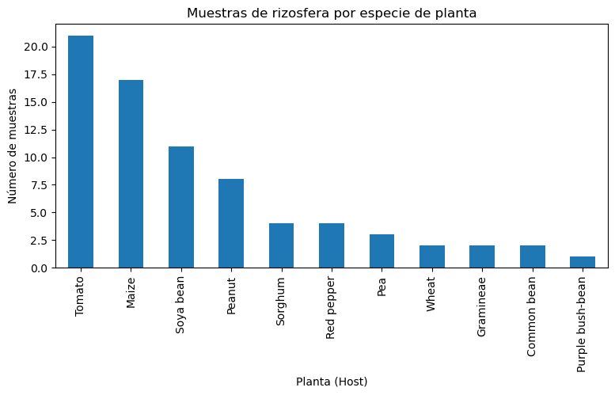
1.2 selección de tomate y evaluación del tamaño de muestra
Antes de comparar países, revisamos su representación. Con pocos replicados por país, las correlaciones entre géneros son especialmente inestables. Las muestras sin país conocido se excluyen del análisis geográfico.
In [24]:
host_value ="Tomato"tomato_meta = metadata_df.loc[ metadata_df["host_name"].eq(host_value) & metadata_df["country"].notna()].copy().sort_values("country")tomato_counts = counts_df.loc[:, tomato_meta.index]nonempty = tomato_counts.sum(axis=0) >0tomato_counts = tomato_counts.loc[:, nonempty]tomato_meta = tomato_meta.loc[tomato_counts.columns]if tomato_counts.shape[1] <2:raiseValueError("Se necesitan al menos dos muestras de tomate con conteos y país")country_sizes = tomato_meta["country"].value_counts().sort_index()print("Muestras de tomate por país:")display(country_sizes.to_frame("n_muestras"))if (country_sizes <5).any():print("Advertencia: algunos países tienen menos de 5 muestras; interpretar con cautela.")
Muestras de tomate por país:
n_muestras
China
5
Mexico
5
Netherlands
6
South Africa
5
2. Exploración de abundancias taxonómicas
Para comparar perfiles de composición, normalizamos cada muestra por separado:
\[\text{abundancia relativa} = \frac{\text{conteo del taxón}}{\text{suma de conteos de esa muestra}}.\]
Agrupamos características con la misma etiqueta de género; las etiquetas ausentes se conservan como Sin asignar. En estas gráficas, Otros géneros representa la abundancia que no está entre los 10 principales.
In [26]:
# 1. Primero limpiamos las etiquetas de génerodef clean_genus(x):if pd.isna(x) orstr(x).strip().lower() in ("", "none", "nan"):return"Sin asignar"returnstr(x).strip()# 2. Obtener las etiquetas taxonómicas correspondientes a cada fila de la matriz de conteosgenus_labels = taxonomy_df["genus"].reindex(counts_df.index).map(clean_genus)# 3. Agrupamos los conteos por género: sumar los conteos de los taxones que pertenecen al mismo génerogenus_counts = counts_df.groupby(genus_labels, sort=False).sum()# 4. Calculamos abundancias relativas por muestragenus_rel = genus_counts.div(genus_counts.sum(axis=0).replace(0, np.nan), axis=1)# 5. Identificamos los 10 géneros más abundantes: calcular abundancia relativa promedio entre muestras y excluir observaciones sin género asignadotop10_global = genus_rel.drop(index="Sin asignar", errors="ignore").mean(axis=1).nlargest(10).index.tolist()# 6. Calculamos abundancias promedio por especie de plantarel_by_host = genus_rel.T.join(metadata_df[["host_name"]]).groupby("host_name").mean().T# 7. Preparamos los datos para la gráficahost_plot = rel_by_host.reindex(top10_global).T.copy()host_plot["Otros géneros"] = (1- host_plot.sum(axis=1)).clip(lower=0)# 8. Realizamos el plotax = host_plot.plot.bar(stacked=True, figsize=(11, 5), colormap="tab20")ax.set(xlabel="Especie de planta", ylabel="Abundancia relativa media", title="Composición microbiana de la rizosfera por especie de planta")# Los géneros van en cursiva, manipulamos la leyenda para eso# Obtener los elementos de la leyendahandles, labels = ax.get_legend_handles_labels()# Crear la leyendalegend = ax.legend(handles, labels, bbox_to_anchor=(1.02, 1), loc="upper left")# Poner en cursivas los nombres de los génerosfor text in legend.get_texts():if text.get_text() !="Otros taxones y sin asignar": text.set_fontstyle("italic")plt.xticks(rotation=45, ha="right")plt.tight_layout()plt.show()
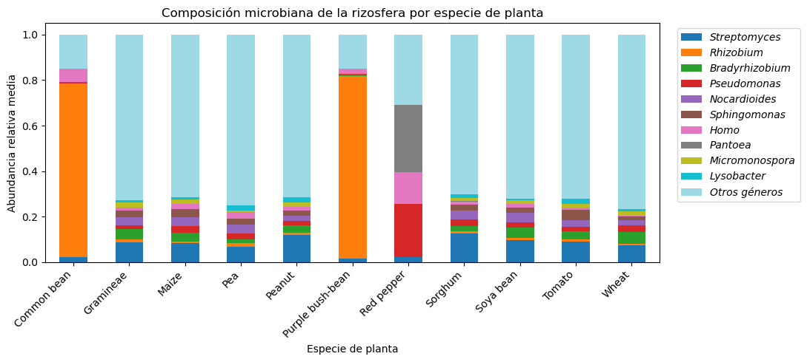
2.1. Perfiles de las muestras de tomate por país
La gráfica siguiente muestra cada muestra individual. Los 10 géneros se eligen globalmente entre las muestras de tomate para mantener categorías comparables.
In [28]:
# 1. Seleccionar las muestras de tomatetomato_genus_rel = genus_rel.loc[:, tomato_meta.index]# 2. Seleccionar los 10 géneros más abundantes (excluyendo los no asignados)top10_tomato = tomato_genus_rel.drop(index="Sin asignar", errors="ignore").mean(axis=1).nlargest(10).index.tolist()# 3. Preparar los datos para la gráficaplot_samples = tomato_genus_rel.reindex(top10_tomato).T.copy()plot_samples["Otros taxones y sin asignar"] = (1- plot_samples.sum(axis=1)).clip(lower=0)# 4. Agregar el país y ordenar las muestrasplot_samples["country"] = tomato_meta.loc[plot_samples.index, "country"]plot_samples = plot_samples.sort_values("country")# Guardar los países antes de graficarcountries = plot_samples.pop("country")# 5. Crear la gráficafig, ax = plt.subplots(figsize=(max(12, 0.5*len(plot_samples)), 6))plot_samples.plot.bar(stacked=True, ax=ax, colormap="tab20", width=0.85)ax.set(title="Rizosfera de tomate: composición relativa por muestra", xlabel="", ylabel="Abundancia relativa")# 6. Mostrar los identificadores de las muestrasax.set_xticklabels(plot_samples.index, rotation=90, fontsize=8)# 7. Agregar separadores y nombres de paísesfor country in countries.unique(): positions = np.where(countries.values == country)[0] start = positions[0] end = positions[-1] center = (start + end) /2# Nombre del país debajo de las muestras ax.text(center, -0.35, str(country), ha="center", va="top", fontsize=11, fontweight="bold", transform=ax.get_xaxis_transform())# Separador entre paísesif end <len(plot_samples) -1: ax.axvline(end +0.5, color="gray", linestyle="--", linewidth=0.8)# 8. Leyenda con géneros en cursivashandles, labels = ax.get_legend_handles_labels()legend = ax.legend(handles, labels, bbox_to_anchor=(1.02, 1), loc="upper left")for text in legend.get_texts():if text.get_text() !="Otros taxones y sin asignar": text.set_fontstyle("italic")# 9. Ajustar los márgenesplt.subplots_adjust(bottom=0.38, right=0.78)plt.show()
Red de similitud entre muestras mediante Bray-Curtis
La matriz de Bray-Curtis es una medida de disimilitud que se utiliza para comparar la composición de comunidades microbianas entre diferentes muestras. Esta matriz nos permitirá analizar la diversidad microbiana en diferentes especies de plantas y cómo varía según el tipo de microorganismo y la especie de planta.
La disimilitud Bray–Curtis para vectores de abundancia no negativos es
Con abundancias relativas, 0 indica perfiles idénticos y 1 indica que no comparten abundancia en los mismos géneros. Bray–Curtis no necesariamente cumple la desigualdad triangular: aquí la empleamos como matriz de disimilitudes.
Calcularemos la matriz de Bray-Curtis para los datos de abundancia de los microorganismos presentes en las muestras de Tomate, y mostrando las agrupaciones de las muestras según el continente de origen. Esto nos permitirá observar cómo varía la diversidad microbiana según el continente y cómo se relaciona con la especie de planta y el tipo de microorganismo presente en cada muestra.
In [31]:
host_value ='Tomato'# Alineamos la metadata de las muestras de BIOM, luego mantenemos las muestras de tomate con un país conocidotomato_meta = metadata_df.reindex(relative_counts_df.columns)tomato_meta = tomato_meta.loc[ tomato_meta['host_name'].eq(host_value) & tomato_meta['country'].notna()].sort_values(['country'], kind='stable')tomato_samples = tomato_meta.index.tolist()iflen(tomato_samples) <2:raiseValueError(f'Need at least two {host_value} samples with country metadata.')# Calculamos la matriz de distancia de Bray-Curtis para las muestras de tomate y creamos un DataFrame para facilitar la visualizaciónbraycurtis_tomato = pairwise_distances( relative_counts_df.loc[:, tomato_samples].T, metric='braycurtis')braycurtis_tomato_by_country = pd.DataFrame( braycurtis_tomato, index=tomato_samples, columns=tomato_samples)# Creamos un heatmap de la matriz de distancia de Bray-Curtis para las muestras de tomate, agrupadas por paísfig, ax = plt.subplots( figsize=(max(12, 0.22*len(tomato_samples) +5), max(10, 0.18*len(tomato_samples) +5)))sns.heatmap( braycurtis_tomato_by_country, cmap='viridis', vmin=0, vmax=1, xticklabels=tomato_samples, yticklabels=tomato_samples, cbar_kws={'label': 'Bray-Curtis distance'}, ax=ax)# Agregamos líneas de separación y etiquetas de país en el heatmapcountry_groups = tomato_meta.groupby('country', sort=False).size()boundary =0for country, sample_count in country_groups.items():if boundary >0: ax.axvline(boundary, color='red', linestyle='--', linewidth=1.5) ax.axhline(boundary, color='red', linestyle='--', linewidth=1.5) ax.text( boundary + sample_count /2,1.02, country, ha='center', va='bottom', fontsize=9, transform=ax.get_xaxis_transform() ) boundary += sample_countax.set_title(f'Bray-Curtis Distance for {host_value} Samples, Grouped by Country', pad=42)ax.set_xlabel('Samples (ordered by country)')ax.set_ylabel('Samples (ordered by country)')ax.tick_params(axis='x', labelrotation=90, labelsize=7)ax.tick_params(axis='y', labelsize=7)fig.tight_layout()heatmap_dir = os.path.join(workdir, 'Distancia_Bray-curtis', 'Heatmap')os.makedirs(heatmap_dir, exist_ok=True)save_path = os.path.join(heatmap_dir, 'tomato_samples_by_country_braycurtis.jpg')fig.savefig(save_path, bbox_inches='tight', dpi=150)plt.show()plt.close(fig)print(f'Samples included: {len(tomato_samples)}')print(country_groups)print(f'Matrix shape: {braycurtis_tomato_by_country.shape}')print(f'Saved to: {save_path}')
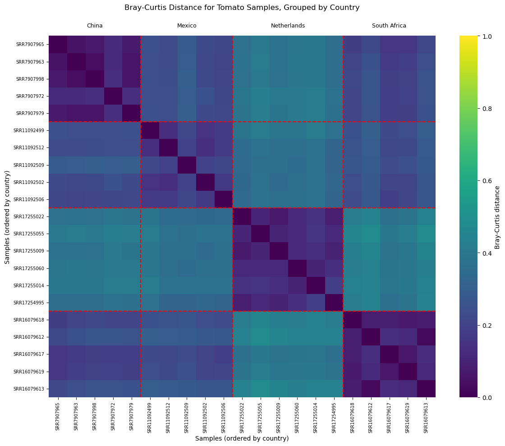
Samples included: 21
country
China 5
Mexico 5
Netherlands 6
South Africa 5
dtype: int64
Matrix shape: (21, 21)
Saved to: subset/Distancia_Bray-curtis/Heatmap/tomato_samples_by_country_braycurtis.jpg
3. Red de similitud
Una vez que tenemos la matriz de Bray-Curtis, podemos construir un grafo de similitud de microorganismos en las muestras de Tomate, donde los nodos representan los diferentes microorganismos y las aristas representan la coocurrencia entre ellos. Esto nos permitirá observar cómo se relacionan los diferentes microorganismos presentes en las muestras de Tomate y cómo varía la diversidad microbiana según el continente y la especie de planta.
Cada nodo es una muestra. Se añade una arista si su disimilitud es menor o igual a \(\varepsilon\). El umbral de 0.2 se utiliza como ejemplo visual, no como resultado óptimo ni como evidencia de agrupación. La posición de los nodos se calcula a partir de la red, sin imponer centros geográficos. Los colores solo se añaden al final.
In [35]:
max_braycurtis_distance =0.2sample_meta = metadata_df.reindex(braycurtis_tomato_by_country.index)sample_meta = sample_meta.loc[sample_meta['country'].notna()]sample_ids = sample_meta.index.intersection(braycurtis_tomato_by_country.index, sort=False)distance_df = braycurtis_tomato_by_country.loc[sample_ids, sample_ids]sample_meta = sample_meta.loc[sample_ids]country_names =sorted(sample_meta['country'].unique())country_palette = { country: plt.cm.tab10(i %10)for i, country inenumerate(country_names)}tomato_sample_graph = nx.Graph(host_name='Tomato')for sample_id, row in sample_meta.iterrows(): tomato_sample_graph.add_node(sample_id, country=row['country'])for sample_a, sample_b in combinations(sample_ids, 2): distance = distance_df.loc[sample_a, sample_b]if distance <= max_braycurtis_distance: tomato_sample_graph.add_edge( sample_a, sample_b, braycurtis_distance=distance, similarity=1- distance )country_centers = { country: (2.4* np.cos(2* np.pi * i /len(country_names)),2.4* np.sin(2* np.pi * i /len(country_names)) )for i, country inenumerate(country_names)}pos = {}for country in country_names: country_samples = [ sample_id for sample_id in tomato_sample_graph.nodesif tomato_sample_graph.nodes[sample_id]['country'] == country ] local_pos = nx.circular_layout(country_samples, scale=0.85) center_x, center_y = country_centers[country]for sample_id, (x, y) in local_pos.items(): pos[sample_id] = (center_x + x, center_y + y)fig, ax = plt.subplots(figsize=(15, 10))edge_similarities = [ tomato_sample_graph[u][v]['similarity']for u, v in tomato_sample_graph.edges]if edge_similarities: nx.draw_networkx_edges( tomato_sample_graph, pos, ax=ax, width=[1+4* value for value in edge_similarities], edge_color=edge_similarities, edge_cmap=plt.cm.viridis, edge_vmin=1- max_braycurtis_distance, edge_vmax=1, alpha=0.65 )nx.draw_networkx_nodes( tomato_sample_graph, pos, ax=ax, node_size=700, node_color=[ country_palette[tomato_sample_graph.nodes[node]['country']]for node in tomato_sample_graph.nodes ], edgecolors='black')nx.draw_networkx_labels( tomato_sample_graph, pos, ax=ax, labels={node: node for node in tomato_sample_graph.nodes}, font_size=7)ax.legend( handles=[ plt.Line2D([], [], marker='o', linestyle='', color=country_palette[country], label=country)for country in country_names ], title='Country', loc='upper left', bbox_to_anchor=(1.28, 1.0))if edge_similarities: edge_mapper = plt.cm.ScalarMappable( norm=plt.Normalize(vmin=1- max_braycurtis_distance, vmax=1), cmap=plt.cm.viridis ) fig.colorbar(edge_mapper, ax=ax, label='Sample similarity (1 - Bray-Curtis)')ax.set_title(f'Tomato sample similarity graph (Bray-Curtis <= {max_braycurtis_distance})')ax.axis('off')fig.tight_layout()graph_dir = os.path.join(workdir, 'Grafos', 'Tomato')os.makedirs(graph_dir, exist_ok=True)save_path = os.path.join(graph_dir, 'tomato_braycurtis_similarity_graph.png')fig.savefig(save_path, bbox_inches='tight', dpi=150)plt.show()plt.close(fig)print(f'Nodes: {tomato_sample_graph.number_of_nodes()}')print(f'Edges: {tomato_sample_graph.number_of_edges()}')print(f'Countries: {len(country_names)}')print(f'Saved to: {save_path}')
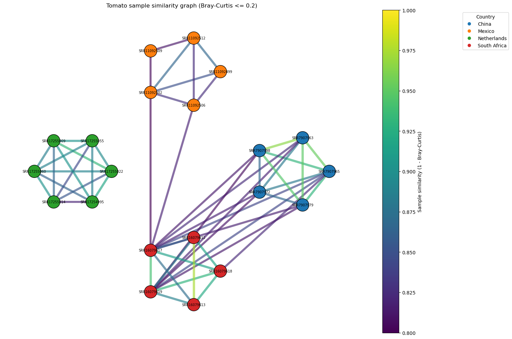
Nodes: 21
Edges: 56
Countries: 4
Saved to: subset/Grafos/Tomato/tomato_braycurtis_similarity_graph.png
4. Homología persistente con complejo de Vietoris Rips
Aquí deberíamos introducir cosas teóricas de TDA, algo muy muy breve, tipo esto: https://carpentries-incubator.github.io/topological-data-analysis/01-introduction/index.html
En vez de fijar un solo \(\varepsilon\), dejamos que el umbral aumente. Cada arista aparece cuando la disimilitud de sus extremos alcanza el umbral; los triángulos y símplices superiores aparecen cuando todas sus aristas están presentes. Así estudiamos \(H_0\) (componentes que se fusionan) y \(H_1\) (ciclos no rellenados que aparecen y desaparecen). Un ciclo en el grafo puede estar rellenado por triángulos en el complejo, por lo que no necesariamente genera una clase de \(H_1\).
Ahora calculemos el diagrama de persistencia asociado a la matriz de Bray-Curtis, que nos permitirá observar la topología de la red de coocurrencia en las muestras de Tomate y cómo varía según la ciudad.
In [40]:
create_complex(braycurtis_tomato)
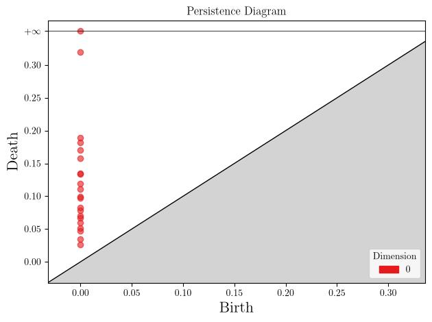
Persistence diagram saved to: /Users/alejandroucan/Documents/GitHub/BioInfo/subset/Diagramas_Persistencia/persistence_diagram.png
Persistence barcode saved to: /Users/alejandroucan/Documents/GitHub/BioInfo/subset/Diagramas_Persistencia/persistence_barcode.png
Podemos observar que no existen ciclos persistentes, lo que indica que estas muestras de Tomate presentan una estructura muy cercana a un árbol, lo que sugiere que los microorganismos presentes en estas muestras están altamente organizados y presentan una estructura jerárquica. Esto podría indicar que los microorganismos presentes en estas muestras tienen una relación simbiótica o mutualista, lo que podría ser beneficioso para la planta de Tomate.
Sección 2
Ahora vamos a trabajar la información de los microorganismos presentes en las muestras de Tomate, pero ahora vamos a centrarnos en la infromación restringida a cada país. Para ello, calculemos de nuevo las matrices de Bray-Curtis para cada país, encontrar correlaciones de abundancias de cada género entre las muestras de tomate provenientes de cada país.
In [47]:
## Aquí debería ser solo de tomate, y las 4 matrices, una por cada país pero solo con las muestras de tomatedef bray_curtis(country):# input: ``country`` nombre del país para el cual se desea calcular la matriz de distancia de Bray-Curtis# output: matriz de distancia de Bray-Curtis para las muestras del país especificadoif country notin country_g_dfs:raiseValueError(f"No data available for {country}.") country_df = country_g_dfs[country] distance_matrix = pairwise_distances(country_df.T, metric='braycurtis')return pd.DataFrame(distance_matrix, index=country_df.columns, columns=country_df.columns)# Plotting Bray-Curtis distance matrices for each countryfor country in country_g_dfs.keys(): distance_matrix = bray_curtis(country) fig, ax = plt.subplots(figsize=(max(12, 0.22*len(distance_matrix) +5), max(10, 0.18*len(distance_matrix) +5))) sns.heatmap( distance_matrix, cmap='viridis', vmin=0, vmax=1, xticklabels=distance_matrix.columns, yticklabels=distance_matrix.index, cbar_kws={'label': 'Bray-Curtis distance'}, ax=ax ) ax.set_title(f'Bray-Curtis Distance for {country} Samples', pad=42) ax.set_xlabel('Samples') ax.set_ylabel('Samples') ax.tick_params(axis='x', labelrotation=90, labelsize=7) ax.tick_params(axis='y', labelsize=7) fig.tight_layout() heatmap_dir = os.path.join(workdir, 'Distancia_Bray-curtis', 'Heatmap') os.makedirs(heatmap_dir, exist_ok=True) save_path = os.path.join(heatmap_dir, f'{country}_braycurtis_distance.jpg') fig.savefig(save_path, bbox_inches='tight', dpi=150) plt.show() plt.close(fig)print(f'Samples included: {len(distance_matrix)}')print(f'Matrix shape: {distance_matrix.shape}')print(f'Saved to: {save_path}')
China: 5 Tomato samples; saved to /Users/alejandroucan/Documents/GitHub/BioInfo/subset/Distancia_Bray-curtis/Heatmap/Tomato_by_country/China_braycurtis_clustered.jpg
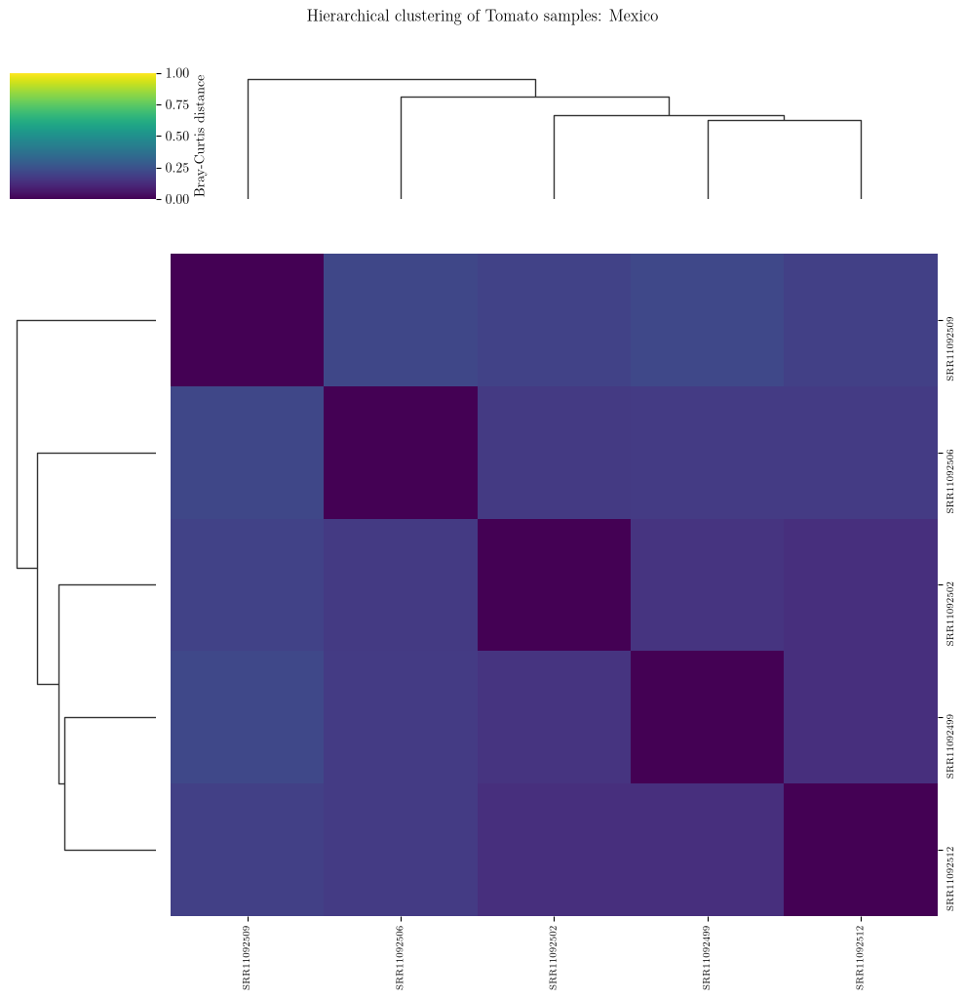
Mexico: 5 Tomato samples; saved to /Users/alejandroucan/Documents/GitHub/BioInfo/subset/Distancia_Bray-curtis/Heatmap/Tomato_by_country/Mexico_braycurtis_clustered.jpg
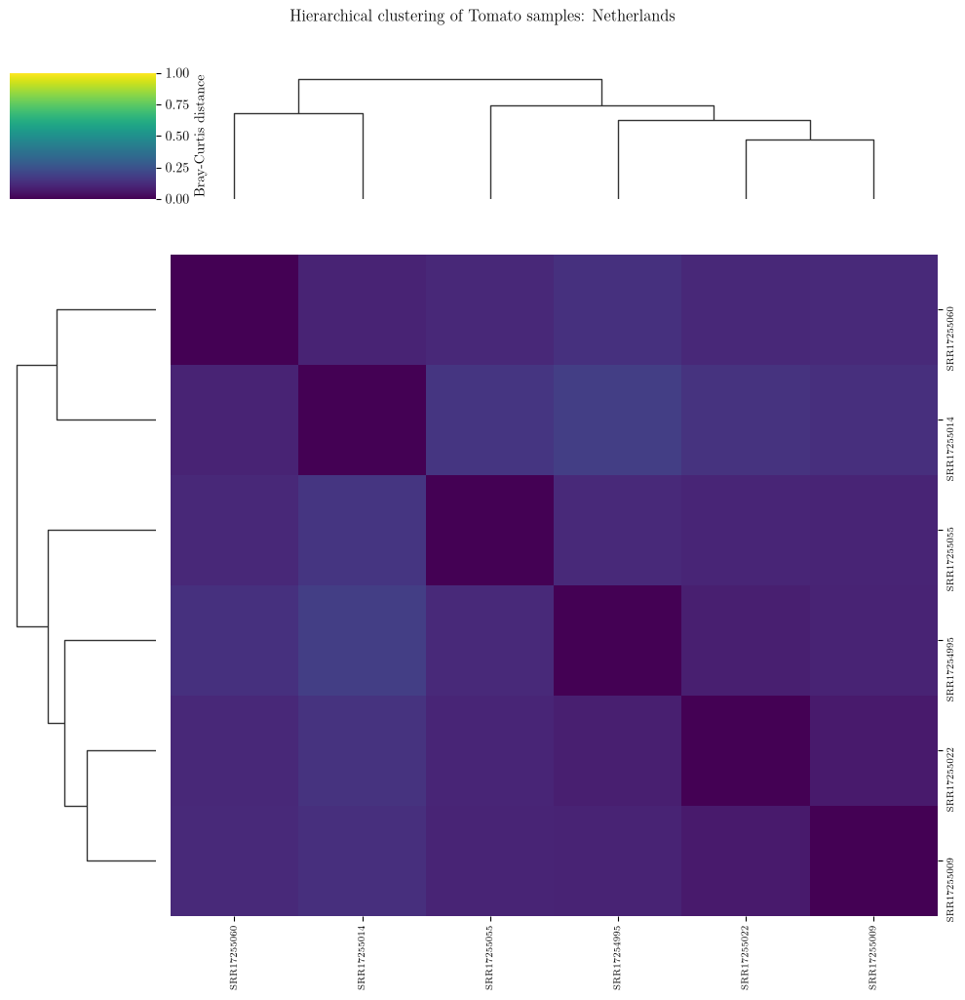
Netherlands: 6 Tomato samples; saved to /Users/alejandroucan/Documents/GitHub/BioInfo/subset/Distancia_Bray-curtis/Heatmap/Tomato_by_country/Netherlands_braycurtis_clustered.jpg
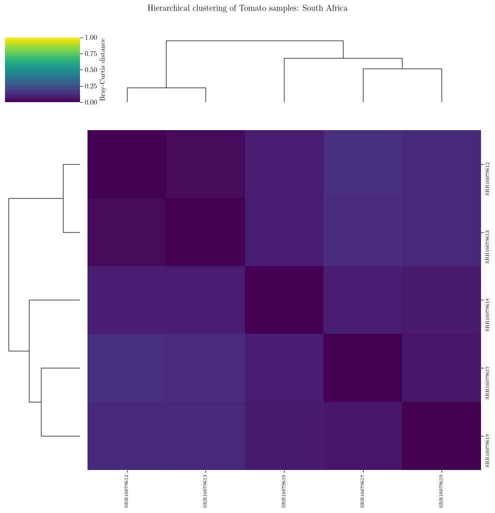
South Africa: 5 Tomato samples; saved to /Users/alejandroucan/Documents/GitHub/BioInfo/subset/Distancia_Bray-curtis/Heatmap/Tomato_by_country/South_Africa_braycurtis_clustered.jpg
In [36]:
persistence_by_country = {}for country, result in braycurtis_by_country.items():if result isNone:continue distance_df, _ = result persistence_by_country[country] = create_complex( distance_df.to_numpy(), label=country )print(f'Generated persistence diagrams for {len(persistence_by_country)} countries.')
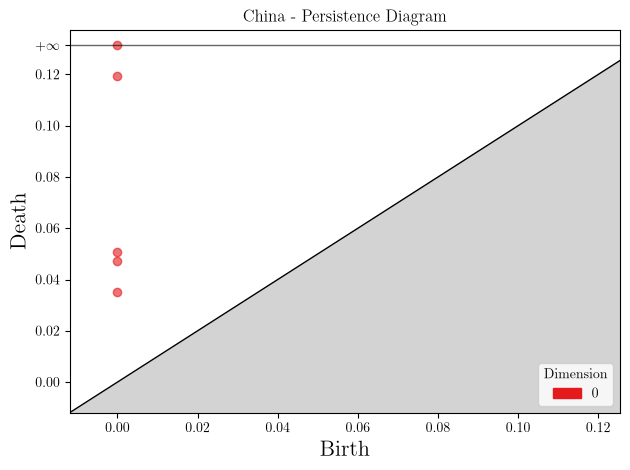
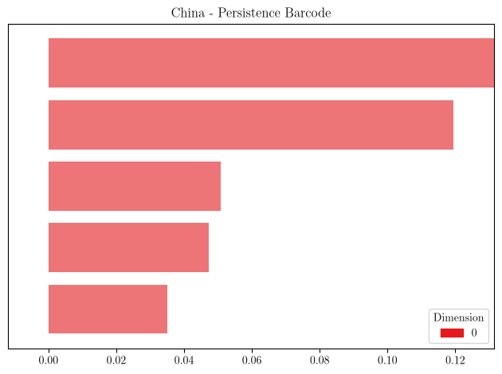
Persistence diagram saved to: /Users/alejandroucan/Documents/GitHub/BioInfo/subset/Diagramas_Persistencia/China_persistence_diagram.png
Persistence barcode saved to: /Users/alejandroucan/Documents/GitHub/BioInfo/subset/Diagramas_Persistencia/China_persistence_barcode.png
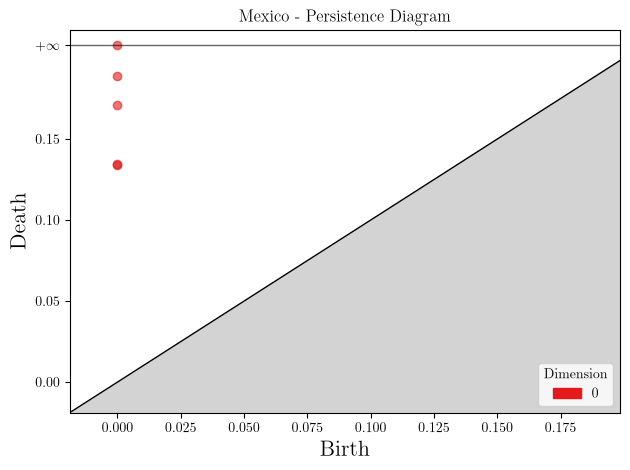
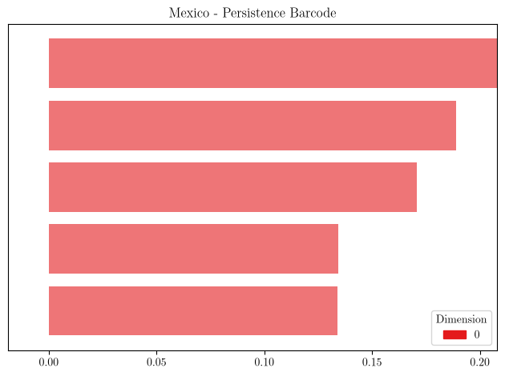
Persistence diagram saved to: /Users/alejandroucan/Documents/GitHub/BioInfo/subset/Diagramas_Persistencia/Mexico_persistence_diagram.png
Persistence barcode saved to: /Users/alejandroucan/Documents/GitHub/BioInfo/subset/Diagramas_Persistencia/Mexico_persistence_barcode.png
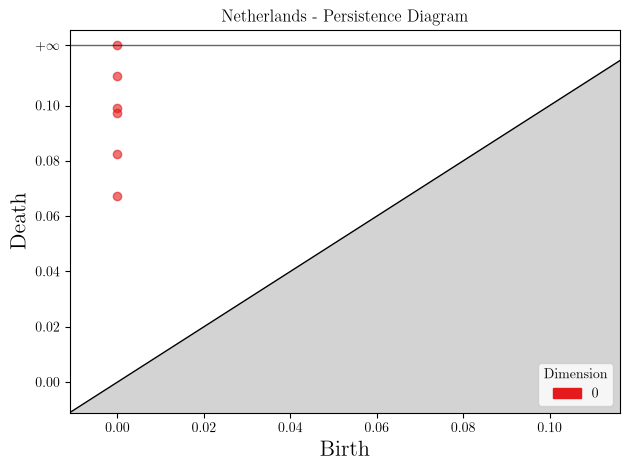
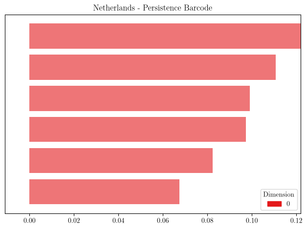
Persistence diagram saved to: /Users/alejandroucan/Documents/GitHub/BioInfo/subset/Diagramas_Persistencia/Netherlands_persistence_diagram.png
Persistence barcode saved to: /Users/alejandroucan/Documents/GitHub/BioInfo/subset/Diagramas_Persistencia/Netherlands_persistence_barcode.png
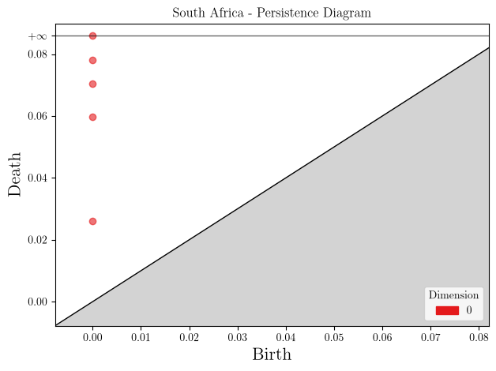
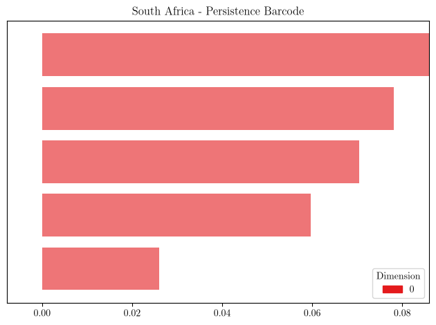
Persistence diagram saved to: /Users/alejandroucan/Documents/GitHub/BioInfo/subset/Diagramas_Persistencia/South_Africa_persistence_diagram.png
Persistence barcode saved to: /Users/alejandroucan/Documents/GitHub/BioInfo/subset/Diagramas_Persistencia/South_Africa_persistence_barcode.png
Generated persistence diagrams for 4 countries.
Aquí deberíamos cerrar con algo de interpretación
Redes exploratorias de asociaciones entre géneros
Ahora cambia la unidad de análisis: cada nodo es un género y cada arista representa una correlación de abundancias relativas entre muestras de tomate de un mismo país. Esto no es una red de coocurrencia ecológica validada: Spearman detecta asociación monotónica, y las proporciones composicionales pueden producir correlaciones espurias.
Para hacer comparables los nodos de las redes, seleccionamos un conjunto global fijo de hasta 10 géneros entre las muestras de tomate, en vez de elegir 10 diferentes en cada país. No renormalizamos estos 10 géneros para que sumen 1: conservamos las abundancias relativas respecto al total de cada muestra. Se requiere variabilidad de cada género dentro de cada país. Los países con menos de 5 muestras se excluyen de este análisis exploratorio; 5 es solo un mínimo operativo, no garantía de potencia estadística.
In [48]:
min_samples_corr =5selected_genera = tomato_genus_rel.mean(axis=1).nlargest(10).index.tolist()print("Géneros fijos:", selected_genera)eligible_countries = country_sizes[country_sizes >= min_samples_corr].index.tolist()print("Países con suficientes muestras para exploración:", eligible_countries)ifnot eligible_countries:print("No hay países con n ≥ 5: no se calcularán redes de Spearman.")
Géneros fijos: ['Streptomyces', 'Sphingomonas', 'Bradyrhizobium', 'Nocardioides', 'Lysobacter', 'Pseudomonas', 'Sphingobium', 'Brevundimonas', 'Micromonospora', 'Mesorhizobium']
Países con suficientes muestras para exploración: ['China', 'Mexico', 'Netherlands', 'South Africa']
6. Correlaciones y transformación a disimilitudes
Para cada país calculamos Spearman entre pares de géneros a través de sus muestras. Si un género no varía, la correlación es indefinida; no la reemplazamos por cero. Para mantener un conjunto común de nodos entre países, retiramos los géneros constantes en cualquiera de los países elegibles. Si quedan menos de dos géneros, detenemos esta sección.
Exploramos tres transformaciones de la correlación \(\rho\):
Absoluta:\(d=1-|\rho|\), asociación fuerte de cualquier signo.
Estas matrices son disimilitudes construidas para explorar filtraciones, no distancias métricas en general. El valor 1 para asociaciones de signo contrario o nulas significa que la arista entra al final de la filtración, no que exista una relación biológica.
Antes de Calcular los grafos de co-ocurrencia, ocupamos definir algunas funciones auxiliares que nos permitirán realizar los cálculos de manera más eficiente y organizada. Estas funciones incluirán la creación de matrices de correlación de Spearmen, matriz de valores P, y traducción de correlación a distancia para poder construir los grafos.
In [48]:
def spearman_corr_matrix(working_directory: str, suffix: str, genus_df_filtered: pd.DataFrame): os.makedirs(working_directory, exist_ok=True) rel_abund = genus_df_filtered.div(genus_df_filtered.sum(axis=0), axis=1) rel_abund = rel_abund.replace([np.inf, -np.inf], np.nan) rel_abund = rel_abund.loc[rel_abund.nunique(axis=1, dropna=True) >1]if rel_abund.shape[0] <2:raiseValueError('At least two variable genera are needed to calculate correlations.') result = stats.spearmanr(rel_abund.T, axis=0, nan_policy='omit') genera = rel_abund.index corr_values = np.array(result.statistic, copy=True) pval_values = np.array(result.pvalue, copy=True) np.fill_diagonal(corr_values, 1.0) np.fill_diagonal(pval_values, 0.0) corr_matrix = pd.DataFrame(corr_values, index=genera, columns=genera) pval_matrix = pd.DataFrame(pval_values, index=genera, columns=genera) corr_matrix.to_csv(os.path.join(working_directory, f'corr_matrix_{suffix}.csv')) pval_matrix.to_csv(os.path.join(working_directory, f'pval_matrix_{suffix}.csv'))return corr_matrix, pval_matrix
Se representa una arista si \(d \leq 0.3\) (equivale a \(|\rho|\geq 0.7\) para la versión absoluta). El umbral es ilustrativo y las aristas no se interpretan como interacciones. Usamos las mismas posiciones para los géneros en todos los países, para no sugerir diferencias por el algoritmo de dibujo.
In [50]:
## Primnero mostrar o hacer las redes como antes con lo que tienes y ya después lo de tda
South Africa: absolute=25 edges, positive=13 edges, negative=12 edges -> /Users/alejandroucan/Documents/GitHub/BioInfo/subset/Corr_Spearman/Networks/Tomato_top10/South_Africa/South_Africa_correlation_networks.png
Generated correlation networks for 4 countries.
8. Homología persistente de las redes de asociaciones
Construimos filtraciones de Vietoris–Rips sobre cada una de las tres disimilitudes por país. No calculamos persistencia únicamente sobre la red a umbral 0.3: la filtración utiliza todos los umbrales. Los diagramas \(H_0\) y \(H_1\) describen estructuras de estas matrices de asociación, no pruebas de interacciones ecológicas.
Persistence diagram saved to: /Users/alejandroucan/Documents/GitHub/BioInfo/subset/Diagramas_Persistencia/South_Africa_absolute_top_10_persistence_diagram.png
Persistence barcode saved to: /Users/alejandroucan/Documents/GitHub/BioInfo/subset/Diagramas_Persistencia/South_Africa_absolute_top_10_persistence_barcode.png
Persistence diagram saved to: /Users/alejandroucan/Documents/GitHub/BioInfo/subset/Diagramas_Persistencia/South_Africa_positive_top_10_persistence_diagram.png
Persistence barcode saved to: /Users/alejandroucan/Documents/GitHub/BioInfo/subset/Diagramas_Persistencia/South_Africa_positive_top_10_persistence_barcode.png
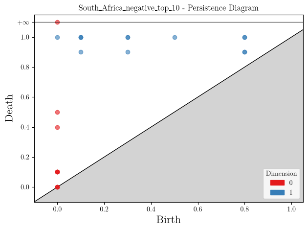
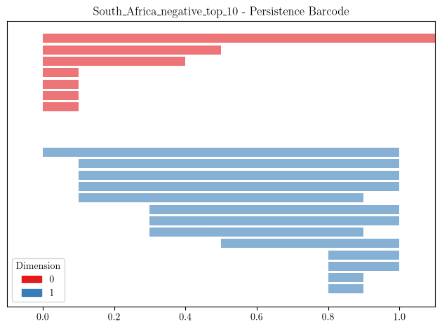
Persistence diagram saved to: /Users/alejandroucan/Documents/GitHub/BioInfo/subset/Diagramas_Persistencia/South_Africa_negative_top_10_persistence_diagram.png
Persistence barcode saved to: /Users/alejandroucan/Documents/GitHub/BioInfo/subset/Diagramas_Persistencia/South_Africa_negative_top_10_persistence_barcode.png
Generated persistence diagrams for 3 distance matrices using 10 top genera.
Distance matrices saved to: /Users/alejandroucan/Documents/GitHub/BioInfo/subset/Corr_Spearman/China/
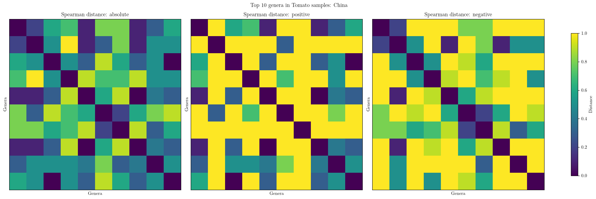
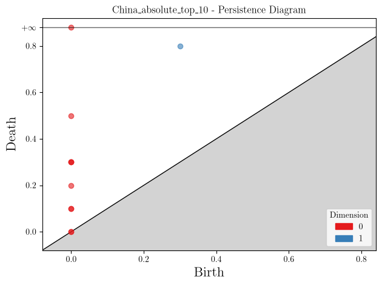
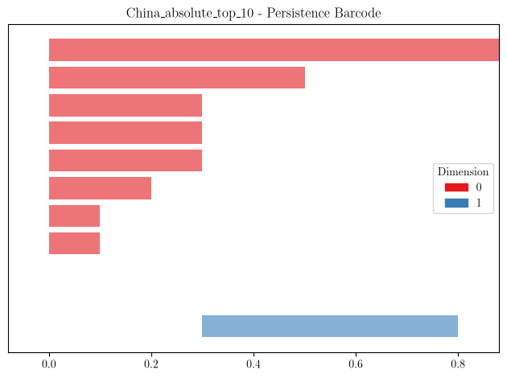
Persistence diagram saved to: /Users/alejandroucan/Documents/GitHub/BioInfo/subset/Diagramas_Persistencia/China_absolute_top_10_persistence_diagram.png
Persistence barcode saved to: /Users/alejandroucan/Documents/GitHub/BioInfo/subset/Diagramas_Persistencia/China_absolute_top_10_persistence_barcode.png
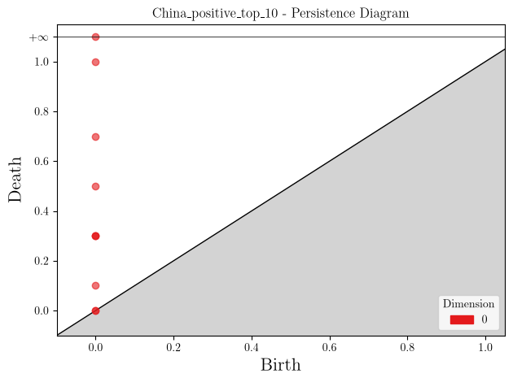
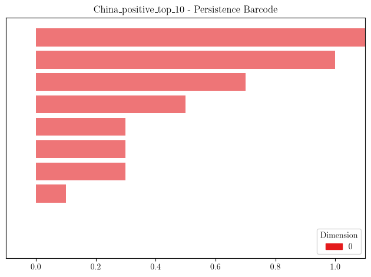
Persistence diagram saved to: /Users/alejandroucan/Documents/GitHub/BioInfo/subset/Diagramas_Persistencia/China_positive_top_10_persistence_diagram.png
Persistence barcode saved to: /Users/alejandroucan/Documents/GitHub/BioInfo/subset/Diagramas_Persistencia/China_positive_top_10_persistence_barcode.png
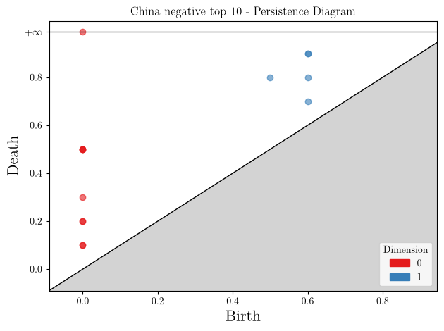
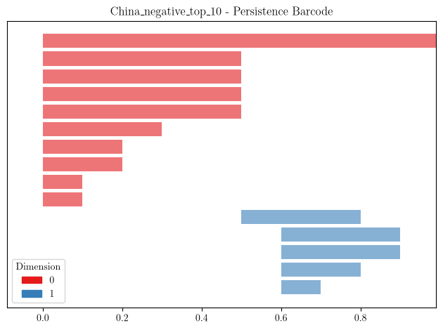
Persistence diagram saved to: /Users/alejandroucan/Documents/GitHub/BioInfo/subset/Diagramas_Persistencia/China_negative_top_10_persistence_diagram.png
Persistence barcode saved to: /Users/alejandroucan/Documents/GitHub/BioInfo/subset/Diagramas_Persistencia/China_negative_top_10_persistence_barcode.png
China: 5 samples, 10 variable top genera; heatmap saved to /Users/alejandroucan/Documents/GitHub/BioInfo/subset/Corr_Spearman/China/Heatmap/tomato_china_correlation_distances.jpg
Distance matrices saved to: /Users/alejandroucan/Documents/GitHub/BioInfo/subset/Corr_Spearman/Netherlands/
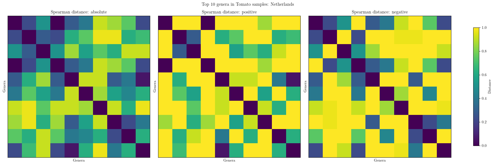
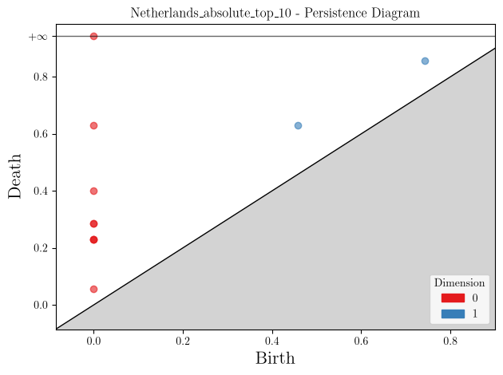
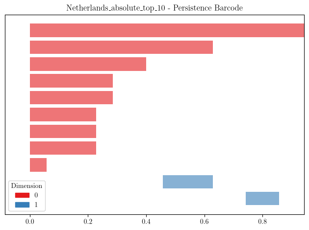
Persistence diagram saved to: /Users/alejandroucan/Documents/GitHub/BioInfo/subset/Diagramas_Persistencia/Netherlands_absolute_top_10_persistence_diagram.png
Persistence barcode saved to: /Users/alejandroucan/Documents/GitHub/BioInfo/subset/Diagramas_Persistencia/Netherlands_absolute_top_10_persistence_barcode.png
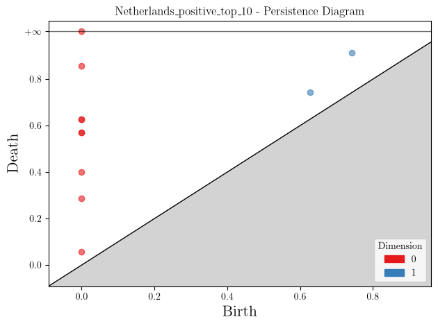
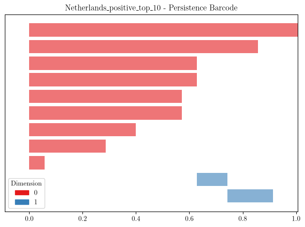
Persistence diagram saved to: /Users/alejandroucan/Documents/GitHub/BioInfo/subset/Diagramas_Persistencia/Netherlands_positive_top_10_persistence_diagram.png
Persistence barcode saved to: /Users/alejandroucan/Documents/GitHub/BioInfo/subset/Diagramas_Persistencia/Netherlands_positive_top_10_persistence_barcode.png
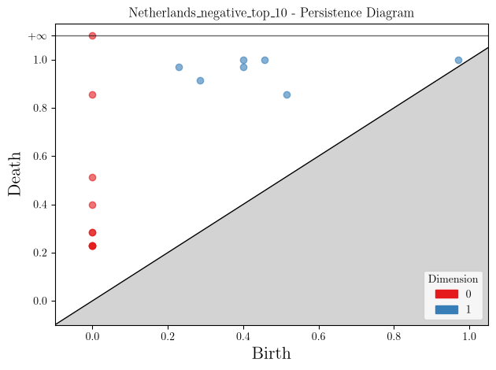
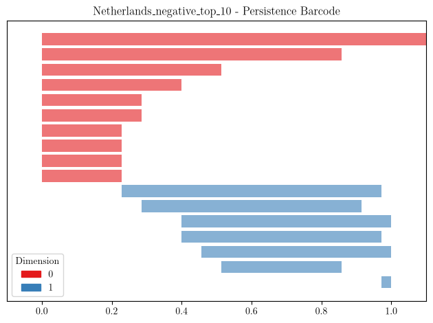
Persistence diagram saved to: /Users/alejandroucan/Documents/GitHub/BioInfo/subset/Diagramas_Persistencia/Netherlands_negative_top_10_persistence_diagram.png
Persistence barcode saved to: /Users/alejandroucan/Documents/GitHub/BioInfo/subset/Diagramas_Persistencia/Netherlands_negative_top_10_persistence_barcode.png
Netherlands: 6 samples, 10 variable top genera; heatmap saved to /Users/alejandroucan/Documents/GitHub/BioInfo/subset/Corr_Spearman/Netherlands/Heatmap/tomato_netherlands_correlation_distances.jpg
Distance matrices saved to: /Users/alejandroucan/Documents/GitHub/BioInfo/subset/Corr_Spearman/Mexico/
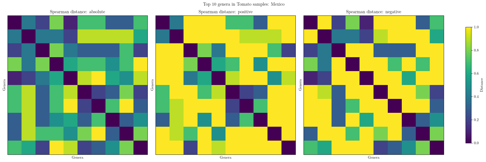
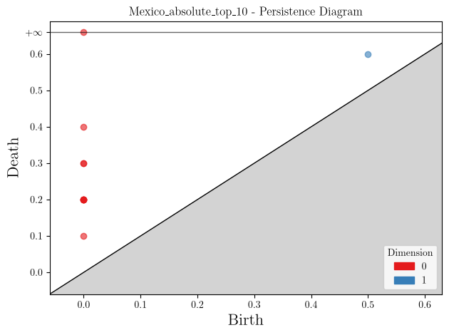
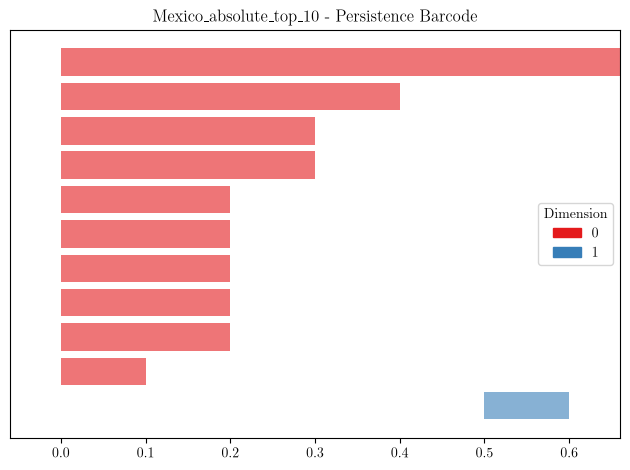
Persistence diagram saved to: /Users/alejandroucan/Documents/GitHub/BioInfo/subset/Diagramas_Persistencia/Mexico_absolute_top_10_persistence_diagram.png
Persistence barcode saved to: /Users/alejandroucan/Documents/GitHub/BioInfo/subset/Diagramas_Persistencia/Mexico_absolute_top_10_persistence_barcode.png
Persistence diagram saved to: /Users/alejandroucan/Documents/GitHub/BioInfo/subset/Diagramas_Persistencia/Mexico_positive_top_10_persistence_diagram.png
Persistence barcode saved to: /Users/alejandroucan/Documents/GitHub/BioInfo/subset/Diagramas_Persistencia/Mexico_positive_top_10_persistence_barcode.png
Persistence diagram saved to: /Users/alejandroucan/Documents/GitHub/BioInfo/subset/Diagramas_Persistencia/Mexico_negative_top_10_persistence_diagram.png
Persistence barcode saved to: /Users/alejandroucan/Documents/GitHub/BioInfo/subset/Diagramas_Persistencia/Mexico_negative_top_10_persistence_barcode.png
Mexico: 5 samples, 10 variable top genera; heatmap saved to /Users/alejandroucan/Documents/GitHub/BioInfo/subset/Corr_Spearman/Mexico/Heatmap/tomato_mexico_correlation_distances.jpg
Completed analyses for 3 countries.
9. Comparación exploratoria de diagramas mediante Wasserstein
La distancia de Wasserstein compara diagramas de persistencia; no mide directamente similitud ecológica. Usamos solo puntos con muerte finita (en \(H_0\) existe una componente esencial con muerte infinita). Comparamos únicamente países con el mismo conjunto de géneros y la misma transformación de correlación. Las distancias calculadas son descriptivas y no constituyen pruebas de significación. Con pocos datos, incluso estas comparaciones pueden ser muy inestables.
In [57]:
from gudhi.hera import wasserstein_distancecountry_persistence = {'South Africa': { distance_type: result[0]for distance_type, result in persistence_south_africa_by_type.items() }}for country_name, result in correlation_results_by_country.items(): country_persistence[country_name] = { distance_type: persistence_result[0]for distance_type, persistence_result in result['persistence'].items() }country_names =sorted(country_persistence)correlation_types = ['absolute', 'positive', 'negative']homology_dimensions = [0, 1, 2]wasserstein_matrices = {}for correlation_type in correlation_types:for dimension in homology_dimensions: distance_matrix = pd.DataFrame(0.0, index=country_names, columns=country_names ) diagrams = {}for country_name in country_names: diagram = country_persistence[country_name][correlation_type] finite_points = [ point for dim, point in diagramif dim == dimension and np.isfinite(point).all() ] diagrams[country_name] = np.asarray(finite_points, dtype=float).reshape(-1, 2)for i, country_a inenumerate(country_names):for j inrange(i +1, len(country_names)): country_b = country_names[j] diagram_a = diagrams[country_a] diagram_b = diagrams[country_b]iflen(diagram_a) ==0andlen(diagram_b) ==0: distance =0.0else: distance = wasserstein_distance(diagram_a, diagram_b, order=2) distance_matrix.loc[country_a, country_b] = distance distance_matrix.loc[country_b, country_a] = distance wasserstein_matrices[(correlation_type, dimension)] = distance_matrixwasserstein_output_dir = os.path.join( corr_output_dir, 'Wasserstein', 'Tomato_top10')os.makedirs(wasserstein_output_dir, exist_ok=True)for correlation_type in correlation_types: fig, axes = plt.subplots(1, len(homology_dimensions), figsize=(16, 5), constrained_layout=True) max_distance =max( wasserstein_matrices[(correlation_type, dimension)].to_numpy().max()for dimension in homology_dimensions ) vmax = max_distance if max_distance >0else1.0for ax, dimension inzip(axes, homology_dimensions): matrix = wasserstein_matrices[(correlation_type, dimension)] matrix.to_csv( os.path.join( wasserstein_output_dir,f'wasserstein_{correlation_type}_dimension_{dimension}.csv' ) ) sns.heatmap( matrix, annot=True, fmt='.3f', cmap='viridis', vmin=0, vmax=vmax, square=True, ax=ax, cbar=ax is axes[-1] ) ax.set_title(f'Homology dimension {dimension}') ax.set_xlabel('Country') ax.set_ylabel('Country') fig.suptitle(f'Wasserstein distances: {correlation_type} Spearman distances') figure_path = os.path.join( wasserstein_output_dir,f'wasserstein_{correlation_type}_top10.jpg' ) fig.savefig(figure_path, bbox_inches='tight', dpi=180) plt.show() plt.close(fig)print(f'{correlation_type}: saved heatmap to {figure_path}')print(f'Countries compared: {country_names}')print(f'Wasserstein matrices saved to: {wasserstein_output_dir}')
---------------------------------------------------------------------------NameError Traceback (most recent call last)
/tmp/ipykernel_2440628/3138554372.py in <module> 6 'South Africa': {
7 distance_type: result[0]----> 8for distance_type, result in persistence_south_africa_by_type.items() 9 }
10 }
NameError: name 'persistence_south_africa_by_type' is not defined
10. Discusión y conclusiones
¿Qué podemos concluir?
Parte I (muestras): Bray–Curtis resume diferencias de composición microbiana entre muestras de rizosfera de tomate. La red y los diagramas muestran cómo se conectan estas muestras al variar un umbral. Si se observan patrones por país, se describen como hipótesis exploratorias, no como efectos geográficos demostrados.
Parte II (géneros): Spearman permite explorar asociaciones monotónicas entre abundancias relativas de géneros dentro de cada país. Las redes y sus diagramas caracterizan la organización de esas asociaciones estadísticas, no relaciones de simbiosis, mutualismo, antagonismo o coocurrencia demostrada. Distancias Wasserstein pequeñas/grandes no establecen por sí solas similitud/diferencia biológica significativa.
Limitaciones que deben reportarse
Número desigual y posiblemente pequeño de muestras por país; las correlaciones son sensibles a ello.
Abundancias relativas son composicionales y pueden inducir asociaciones espurias; para inferir asociaciones microbianas serían preferibles enfoques especializados y validación independiente.
Posibles variables de confusión (suelo, ubicación específica, lote, metodología de secuenciación, profundidad y procesamiento).
Elección de nivel taxonómico (género) y de umbrales visuales; revisar sensibilidad.
La filtración de Vietoris–Rips usa qué métrica.
Preguntas para discutir en el taller
¿Qué cambia si se modifica el umbral de la red de Bray–Curtis?
¿Por qué un triángulo del grafo no necesariamente representa una clase de \(H_1\)?
¿Por qué no podemos interpretar una correlación positiva como mutualismo?
¿Qué cambiaría si los países tuvieran el mismo número de muestras?
¿Cómo distinguir una descripción topológica de una afirmación ecológica causal?
Adicional
De este calculo podemos observar que los top10 generos de microorganismos presentes en las muestras de Tomate por país no son tan diferentes basadas en su agrupación natural (componentes conexas) y su ciclos.
Otra variable de interés es la distribución de los diferentes tipos de microorganismos presentes en las muestras de plantas provenientes de diferentes continentes.
En la celda siguiente, realizamos un gráfico de barras apiladas que muestra la abundancia relativa de los 10 géneros más abundantes de microorganismos en las muestras obtenidas en cierto continente. Esto nos permitirá observar cómo varía la diversidad microbiana según el continente y cómo se relaciona con la especie de planta y el tipo de microorganismo presente en cada muestra.
In [17]:
relative_counts_df = counts_df.div( counts_df.sum(axis=0).replace(0, np.nan), axis=1)sample_country = metadata_df['country'].reindex(relative_counts_df.columns)country_g_dfs = { country: relative_counts_df.loc[:, sample_country.eq(country).to_numpy()]for country in sample_country.dropna().unique()}for country, country_df in country_g_dfs.items():print(f"{country}: {country_df.shape}")if country_g_dfs: first_country =next(iter(country_g_dfs))print(f"\nHead of {first_country} DataFrame:") display(country_g_dfs[first_country].head())
South Africa: (3330, 27)
USA: (3330, 4)
Netherlands: (3330, 7)
Canada: (3330, 2)
Mexico: (3330, 10)
China: (3330, 21)
Korea: (3330, 3)
Denmark: (3330, 1)
Head of South Africa DataFrame:
SRR12192850
SRR13062011
SRR11128413
SRR12964294
SRR12192805
SRR12192851
SRR13062099
SRR11128414
SRR12964292
SRR12192803
...
SRR16079619
SRR16079613
SRR15947152
SRR15947153
SRR15947158
SRR15947148
SRR15947149
SRR15947150
SRR15947147
SRR15947156
Lactiplantibacillus
0.000027
0.000024
0.000044
0.000013
0.000020
0.000016
0.000017
0.000021
0.000024
0.000024
...
0.000020
0.000017
0.000020
0.000026
0.000018
0.000020
0.000015
0.000016
0.000019
0.000019
Lactobacillus
0.000046
0.000049
0.000219
0.000044
0.000055
0.000078
0.000035
0.000048
0.000072
0.000060
...
0.000052
0.000044
0.000064
0.000070
0.000043
0.000046
0.000044
0.000044
0.000039
0.000046
Ligilactobacillus
0.000020
0.000018
0.000097
0.000018
0.000020
0.000130
0.000019
0.000016
0.000022
0.000019
...
0.000024
0.000019
0.000027
0.000038
0.000024
0.000015
0.000025
0.000029
0.000017
0.000016
Limosilactobacillus
0.000047
0.000055
0.000075
0.000039
0.000054
0.000303
0.000044
0.000039
0.000065
0.000062
...
0.000054
0.000045
0.000061
0.000060
0.000043
0.000043
0.000045
0.000046
0.000042
0.000047
Companilactobacillus
0.000008
0.000011
0.000070
0.000008
0.000009
0.000007
0.000008
0.000010
0.000007
0.000008
...
0.000011
0.000008
0.000012
0.000010
0.000010
0.000010
0.000009
0.000008
0.000005
0.000008
5 rows × 27 columns
In [18]:
def plot_top10_genera_by_country(country_name):# input: ``country_name`` nombre del país para el cual se desea graficar la abundancia relativa de los 10 géneros más abundantes# output: gráfico de barras apiladas que muestra la abundancia relativa de los 10 géneros más abundantes en las muestras del país especificadoif country_name notin country_g_dfs:print(f"No data available for {country_name}.")return all_samples =list(country_g_dfs[country_name].columns) combined_counts = counts_df[all_samples] genus_total_counts = combined_counts.sum(axis=1) top10_genera = genus_total_counts.nlargest(10).index df_top10 = country_g_dfs[country_name].loc[top10_genera] df_plot = df_top10.T df_plot.columns = df_plot.columns.map(taxonomy_df['Genus']) fig, ax = plt.subplots(figsize=(12, 6)) df_plot.plot(kind='bar', stacked=True, ax=ax, colormap='tab20') ax.set_title(f"Relative Abundance of Top 10 Genera in {country_name}") ax.set_xlabel("Samples") ax.set_ylabel("Relative Abundance") ax.tick_params(axis='x', rotation=90) ax.legend(title="Genus", bbox_to_anchor=(1.05, 1), loc='upper left') plt.tight_layout() plt.show()
In [19]:
for country in country_g_dfs.keys(): plot_top10_genera_by_country(country)